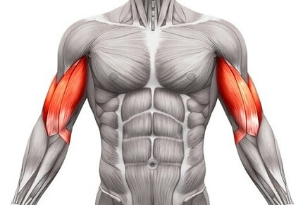

ord


Militærpress er kanskje den øvelsen som er blitt brukt mest for å trene skuldrene opp igjennom årene. En god øvelse for å trene forsiden av skulderen. Plasser føttene i skulderbreddes avstand. Hvil stangen på forsiden av skuldrene. Ha et overhåndsgrep med god avstand mellom hendene. Stangen skal presses opp over hodet. Albueleddet skal være helt utstrakt i topposisjon. Pass på at stangen løftes rett opp, og ikke for langt ut fra kroppen. Vær forsiktig slik at du ikke treffer ansiktet med stangen.